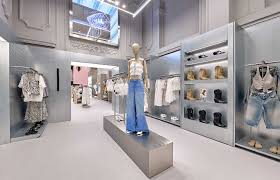

Nuestra Historia
El Nacimiento de un Ícono Juvenil Bershka fue fundada en abril de 1998, naciendo como un concepto innovador dentro del prestigioso Grupo Inditex (el mismo grupo de Zara). Desde su creación, no fue concebida simplemente como una tienda de ropa, sino como un proyecto ambicioso para capturar el mercado de la moda joven que buscaba tendencias rápidas, música y un estilo de vida urbano. En un tiempo récord de tan solo dos años, la marca logró una expansión sin precedentes, alcanzando sus primeros 100 establecimientos físicos.
Evolución y Adaptación al Mercado A medida que la marca crecía, sus tiendas evolucionaron para convertirse en grandes espacios de vanguardia. Bershka entendió que su público no solo quería comprar ropa, sino vivir una experiencia. Por ello, integró en sus locales sistemas de sonido envolvente, pantallas gigantes y una iluminación que recuerda a los clubes nocturnos más modernos. En 2002, la empresa dio un paso gigante al inaugurar su sección de Moda Masculina, consolidándose como una opción completa para todos los jóvenes.
El Concepto
El concepto de Bershka va más allá de ser una simple tienda de ropa; es un espacio de inmersión donde la moda, la música y el arte callejero se encuentran. Sus establecimientos están diseñados como amplias áreas de vanguardia con una estética cuidada, pensada para ofrecer una experiencia de compra única a un público joven y conectado con las últimas tendencias digitales. La marca se divide en tres líneas principales: Bershka, enfocada en la moda más actual; BSK, la línea más joven; y Man, que ofrece desde ropa casual hasta prendas de tendencia para hombres. Con un modelo de 'moda rápida', la marca logra renovar sus colecciones constantemente, respondiendo en tiempo real a las demandas de sus clientes más exigentes en todo el mundo."